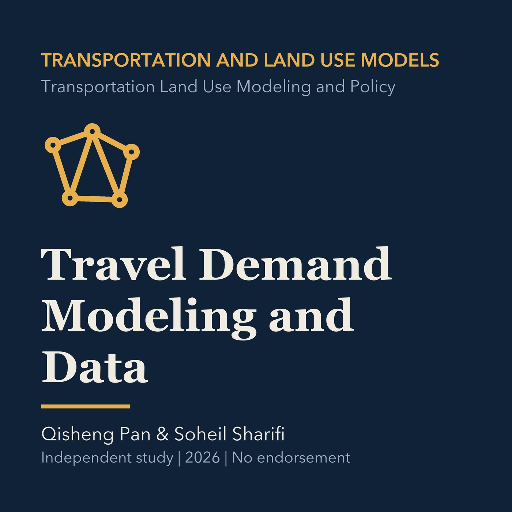

EPISODE 09
Travel Demand Modeling and Data
Introduces travel-demand frameworks, zones, networks, surveys, observed data, validation, and uncertainty, followed by a Torrance application.

- Stable GUID
cdb15b2a-6323-54f7-af90-06ffa830d1a0- Release
- transportation-land-use-modeling-v2026.2
- SHA-256
33ef422acb346e4f0c3ae8a7f1b60c2b601f92ee360f88a87ff80ef6d5b1ba60